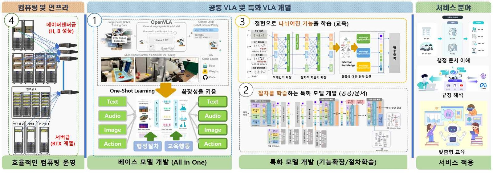

[Ongoing] 분산 GPU 기반 비전-언어-행동 모델 확장 핵심 기술 개발
연구책임자 / 2026.04.01 ~ 2028.12.31 / 과학기술정보통신부 (KRW 6 billion)
분산 GPU 기반 비전-언어-행동 모델 확장 핵심 기술 개발 (Development of Core Technologies for Expandable Vision-Language-Action (VLA) Models on Distributed GPUs)기간: 2026.04. ~ 2028.12.
Funding: IITP (KRW 6 billion)
본 연구는 개별 부서·장소에 파편화된 GPU 자원을 결집하여 경쟁력 있는 컴퓨팅 인프라를 확보하고, 이를 기반으로 모달리티 제한 없이 확장 가능한 70B급 비전-언어-행동(VLA) 모델을 개발하는 것을 목표로 합니다. 이를 위해 ①고품질 한국어·멀티모달 데이터 처리 파이프라인과 70B급 컴퓨팅 집중화 베이스 VLA 모델 개발, ②절차적 이해와 설명가능성을 갖춘 행정 특화 모델(8B) 개발, ③학습자의 수행 과정과 지식·정서 상태를 인식하는 교육 특화 모델(8B) 개발, ④파편화된 GPU 자원을 결집한 분산 컴퓨팅 통합 클러스터(자원 관리·관제·고가용성) 구축을 수행하여, 국가·기관 차원의 핵심 AI 인프라와 확장형 VLA 원천기술을 확보하고자 합니다.
English Summary:
This research aims to consolidate GPU resources fragmented across departments and sites into a competitive computing infrastructure and, on this foundation, to develop an expandable 70B-scale Vision-Language-Action (VLA) model unconstrained by modality. It pursues ① a high-quality Korean and multimodal data-processing pipeline and a 70B compute-intensive base VLA model, ② an administration-specialized model (8B) with procedural reasoning and explainability, ③ an education-specialized model (8B) that recognizes learners' problem-solving processes and cognitive-affective states, and ④ an integrated distributed-GPU cluster (resource management, monitoring, and high availability) that aggregates fragmented GPU resources—thereby securing core national and institutional AI infrastructure and foundational expandable-VLA technology.
